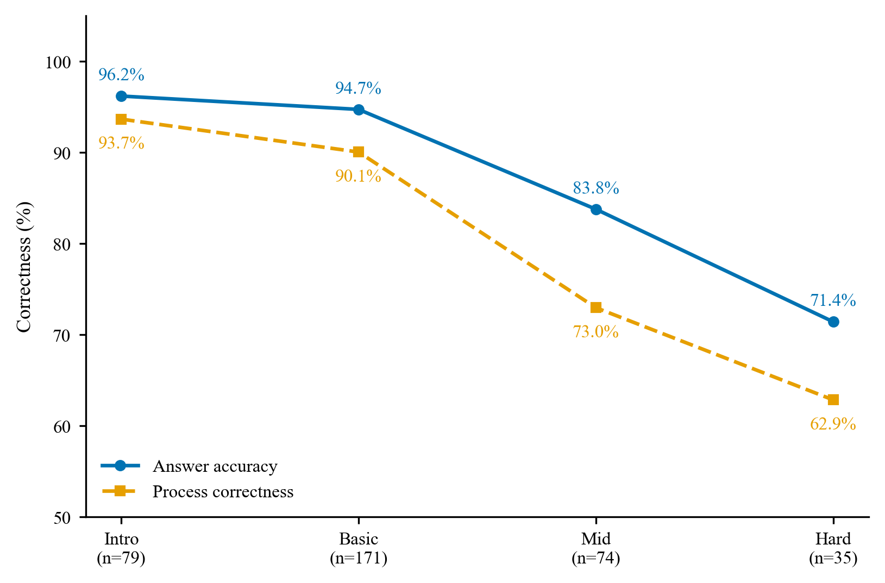
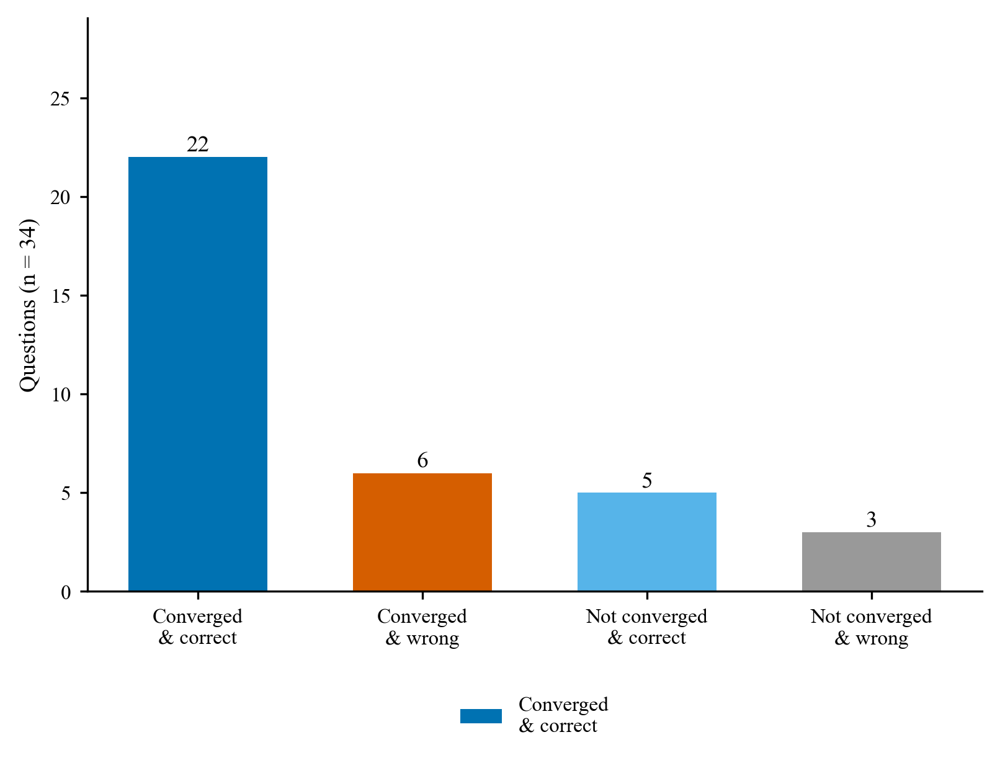

HY3Coder 分析报告
更新时间：2026-09-10 ｜ 数据：
data/outputs/，评测与修正数据分开存放网页版：
reports/REPORT.html，与本文内容一致，表格与配图排版更适合阅读与打印。
1. 评估总览
| 指标 | 数值 |
|---|---|
| 评估样本数 | 359 |
| 答案准确率 | 90.0% |
| 过程正确率（仅 fatal 计入过程错） | 84.4% |
| 仅 minor 的记录样本 | 23（主口径计为过程正确） |
| 判定分布 | ANSWER_INCORRECT=8, CORRECT=303, PROCESS_INCORRECT=33, SILENT_FAILURE=15 |
| 沉默失败检出 | 15（4.2%） |
| 过程正确率 95% CI（Wilson） | [80.3%, 87.8%] |
分平台概览
| 子集 | 样本 | 答案准确率 | 过程正确率 |
|---|---|---|---|
| ABC 自建 | 175 | 93.7% | 90.3% |
| CF 自建 | 184 | 86.4% | 78.8% |
稳定性说明：以上结果都来自单次求解，每题只调用一次模型，采样本身带随机性。为看这项影响有多大，用两个随机种子各取 60% 分档重抽，两次的过程正确率分别是 84.1% 与 81.3%，漂移 2.8pp，在 5pp 的判稳阈值以内。若要把区间收得更紧，可对全量多次求解取平均；本报告作为单次基线，不确定性范围由上面的置信区间和这一检验给出。
1.1 记忆暴露检测
题集都取自官方原题镜像，成绩里难免掺进记忆的成分，所以只能算能力加记忆的上界。为估计暴露程度，按平台与难度分层抽 30 题，每层 5 题，每题问两个独立的问题：能否说出题目出处，能否讲清标准解法。判定规则见附录 D，原始记录在 data/outputs/contamination_probe.jsonl。
| 指标 | 数值 |
|---|---|
| 探测样本 | 30 |
| 自称见过（P1 = seen） | 29，96.7%；迎合偏差高，不作暴露证据 |
| 出处精确命中（强证据） | 6，20.0%；95% CI [10%, 37%] |
| 命中样本的平台分档 | basic 4 / medium 2 / hard 0 |
| 命中样本 | A1023（abc300_c）, C2001（cf1a）, C2002（cf71a）, C2008（cf1730a）, C2072（cf719a）, C2149（cf568a） |
与正式评测交叉，看记忆是否带来红利：
| 组 | 样本 | t0 答案正确 |
|---|---|---|
| 出处命中组 | 6 | 5（83.3%） |
| 未命中组 | 24 | 22（91.7%） |
模型对官方原题普遍自称熟悉，30 题里有 29 题答见过；但能说准出处的只有 6 题，且全部落在入门到基础的经典题上，比如 Theatre Square、71A、719A、1730A、ABC300C，中等以上难度没有出现背题式的出处记忆。命中出处的 6 题与其余 24 题在正式评测上分别答对 5 题和 22 题，看不出记忆抬高了成绩。C2149 是个反例：模型记得它出自 CF 568A，正式评测仍然答错，记忆存在不等于能力存在。局限有三处：训练语料无法实证，行为探测本身有假阴假阳，命中样本又集中在全网烂熟的题上，实际威胁度低。方法见附录 D。
1.2 与任务要求的逐条对照
| 任务要求 | 本系统的对应 | 落点 |
|---|---|---|
| 题集要有标准答案、可自动校验、分难度、说明来源 | 每题带可执行的 AC 参考解与测试用例，公开用例和隐藏用例都在，多解题目用 SPJ 判定；难度双轨分层，平台官方分与 Hy3 多专家评审各一套 | data/questions/*.jsonl；分层方法见附录 A |
| 过程正确性判定、错误定位、错误归类、"答案对但过程不成立"识别 | verdict 四值；findings 带 step_id；10 类错误类型；SILENT_FAILURE |
本报告 §3 与 §7；判定方法见附录 B |
| 实现手段：沙盒校验、多视角 Agent 复核 | 沙盒校验：Python 与 C++ 沙盒跑公开与隐藏用例，答案真值以沙盒为准，static_check 的规则校验作为补充诊断证据；多视角 Agent 复核：V1 自含性审查与 V2 全局回溯各自给出 verdict 与 findings，再由 ARBITER 总仲裁 |
附录 B；代码 src/rex/ |
| 定位准确率（答案错样本）与误报率（答案对样本） | 答案错的 29 条全量人工复核，定位命中 28 条，96.6%；答案对却被判过程有错的 19 条做三层复核 | 本报告 §6，48 条全部抽检 |
| 分析报告：设计依据、错误分类、典型案例、能力边界 | 本报告 §1 至 §9，附录 A 至 D 为四份方法文档全文 | reports/REPORT.md |
2. 分层退化分析
本章有两条难度轴。统一难度分 diff_score 是本报告使用的标准，分层退化分析与后面各章的难度标注都以它为准；平台官方标签只作对照，用来看两个平台各自的原始分级。
2.1 统一难度轴
diff_score 是统一难度分，由 Hy3 三位专家盲打后仲裁给出，取值 0 到 100，与题目来自哪个平台无关，方法与验证见附录 A。按绝对语义刻度切四档：0–20 入门，20–40 基础套路，40–60 中等，60–100 难到极高难。这里不做样本均分，档位含义在跨数据集时保持稳定。
| 语义档 | diff_score 区间 | 样本 | 答案准确率 | 过程正确率 | 95% CI |
|---|---|---|---|---|---|
| 入门~一眼题 | [0,20) | 79 | 96.2% | 93.7% | [86.0%, 97.3%] |
| 基础~套路 | [20,40) | 171 | 94.7% | 90.1% | [84.7%, 93.7%] |
| 中等 | [40,60) | 74 | 82.4% | 71.6% | [60.5%, 80.6%] |
| 难~极高难 | [60,100) | 35 | 68.6% | 62.9% | [46.3%, 76.8%] |
临界点：过程正确率随难度单调下降，从入门~一眼题档的 93.7% 落到难~极高难档的 62.9%。
首次 8pp 以上的显著跌落出现在中等档，即 diff_score 到 40 以后，模型的过程能力开始明显失守。
diff_score 80 以上的极高档只有 5 题，难档整体也才 35 题，两次求解在这个子档的答案对错分别是 3/5 和 5/5，读数被个位数样本支配，因此并入难到极高难一档看，不单独下能力结论；上面的临界点结论也只在入门到中等区间成立。

Fig. 1 统一难度分档下答案准确率（实线）与过程正确率（虚线）。难档覆盖 diff_score 60 以上共 35 题，其中 80 以上的 5 题并入。过程正确率从中等档开始显著跌落，降到 71.6%，这是高难能力边界的第一条证据。
2.2 平台难度轴
按各平台官方难度校正后分 basic、medium、hard 三档，仅作对照。
| 难度 | 样本 | 答案准确率 | 过程正确率 |
|---|---|---|---|
| basic | 68 | 94.1% | 91.2% |
| medium | 165 | 93.9% | 89.1% |
| hard | 126 | 82.5% | 74.6% |
3. 错误类型分布
按评估器已报告的 finding 统计：
| 错误类型 | 数量 | 占比 |
|---|---|---|
| 逻辑缺陷 | 30 | 27.0% |
| 实现层失败 | 18 | 16.2% |
| 复杂度不达标 | 14 | 12.6% |
| 概念理解错误 | 13 | 11.7% |
| 计算错误 | 12 | 10.8% |
| 条件遗漏 | 6 | 5.4% |
| 跳步推导 | 5 | 4.5% |
| 边界条件 | 5 | 4.5% |
| 格式不符 | 5 | 4.5% |
| 题意误读 | 3 | 2.7% |

Fig. 2 过程错误类型分布，条形末端给出条数与占比。逻辑缺陷与实现层错误合计超过一半，短板主要在实现严谨性与建模正确性。
4. 典型案例归因
下面取 5 例，逐题给出完整题面与评估器的定位结果；难度按第 2 章的语义档标注，完整清单见第 7 节。
A1098 · abc228_d
- 难度：语义档 中等，diff_score 46
- 判定：SILENT_FAILURE，置信度 0.95
- 答案正确：True，用例通过率 1.0
- 定位：第2步 逻辑缺陷，并查集设计未考虑线性探测的环形回绕：parent[pos] = find(pos+1) 在 pos = N-1 时指向哨兵 N，而非回绕到…；第4步 边界条件，代码在 pos=N 时访问 parent[N+1]（数组大小 N+1，合法下标 0..N），且写 A[N]（有效仅 0..N-1），属于未处…
题面全文（取自 data/questions/ 里的原始题面）：
Score : $400$ points
Problem Statement
There is a sequence $A = (A_0, A_1, \dots, A_{N - 1})$ with $N = 2^{20}$ terms. Initially, every term is $-1$.
Process $Q$ queries in order. The $i$-th query $(1 \leq i \leq Q)$ is described by an integer $t_i$ such that $t_i = 1$ or $t_i = 2$, and another integer $x_i$, as follows.
If $t_i = 1$, do the following in order.
Define an integer $h$ as $h = x_i$.
While $A_{h \bmod N} \neq -1$, keep adding $1$ to $h$. We can prove that this process ends after finite iterations under the Constraints of this problem.
Replace the value of $A_{h \bmod N}$ with $x_i$.
If $t_i = 2$, print the value of $A_{x_i \bmod N}$ at that time.
Here, for integers $a$ and $b$, $a \bmod b$ denotes the remainder when $a$ is divided by $b$.
Constraints
$1 \leq Q \leq 2 \times 10^5$
$t_i \in \{ 1, 2 \} \, (1 \leq i \leq Q)$
$0 \leq x_i \leq 10^{18} \, (1 \leq i \leq Q)$
There is at least one $i$ $(1 \leq i \leq Q)$ such that $t_i = 2$.
All values in input are integers.
Input
Input is given from Standard Input in the following format:
'''
$Q$
$t_1$ $x_1$
$\vdots$
$t_{Q}$ $x_{Q}$
'''
Output
For each query with $t_i = 2$, print the response in one line. It is guaranteed that there is at least one such query.
Sample Input 1
'''
4
1 1048577
1 1
2 2097153
2 3
'''
Sample Output 1
'''
1048577
-1
'''
We have $x_1 \bmod N = 1$, so the first query sets $A_1 = 1048577$.
In the second query, initially we have $h = x_2$, for which $A_{h \bmod N} = A_{1} \neq -1$, so we add $1$ to $h$. Now we have $A_{h \bmod N} = A_{2} = -1$, so this query sets $A_2 = 1$.
In the third query, we print $A_{x_3 \bmod N} = A_{1} = 1048577$.
In the fourth query, we print $A_{x_4 \bmod N} = A_{3} = -1$.
Note that, in this problem, $N = 2^{20} = 1048576$ is a constant and not given in input.
A1148 · abc368_d
- 难度：语义档 基础~套路，diff_score 22
- 判定：SILENT_FAILURE，置信度 0.93
- 答案正确：True，用例通过率 1.0
- 定位：第2步 概念理解错误，错误断言节点必须保留当且仅当本身是关键点或子树（以1为根）含关键点。反例：链1-2-3, K={3}，代码输出3，正确最小为1，因根1非关键…；第2步 逻辑缺陷，算法等价条件逻辑错误：仅依子树含关键点计数会保留非必要桥接祖先。正确需节点是关键点，或≥2子树枝含关键点，或子树含且父侧含。反例同上。
题面全文（取自 data/questions/ 里的原始题面）：
Score : $425$ points
Problem Statement
You are given a tree with $N$ vertices numbered $1$ to $N$. The $i$-th edge connects vertices $A_i$ and $B_i$.
Consider a tree that can be obtained by removing some (possibly zero) edges and vertices from this graph. Find the minimum number of vertices in such a tree that includes all of $K$ specified vertices $V_1,\ldots,V_K$.
Constraints
$1 \leq K \leq N \leq 2\times 10^5$
$1 \leq A_i,B_i \leq N$
$1 \leq V_1 < V_2 < \ldots < V_K \leq N$
The given graph is a tree.
All input values are integers.
Input
The input is given from Standard Input in the following format:
'''
$N$ $K$
$A_1$ $B_1$
$\vdots$
$A_{N-1}$ $B_{N-1}$
$V_1$ $\ldots$ $V_K$
'''
Output
Print the answer.
Sample Input 1
'''
7 3
1 2
1 3
2 4
2 5
3 6
3 7
1 3 5
'''
Sample Output 1
'''
4
'''
The given tree is shown on the left in the figure below. The tree with the minimum number of vertices that includes all of vertices $1,3,5$ is shown on the right.
Sample Input 2
'''
4 4
3 1
1 4
2 1
1 2 3 4
'''
Sample Output 2
'''
4
'''
Sample Input 3
'''
5 1
1 4
2 3
5 2
1 2
1
'''
Sample Output 3
'''
1
'''
A1164 · abc386_d
- 难度：语义档 中等，diff_score 50
- 判定：SILENT_FAILURE，置信度 0.90
- 答案正确：True，用例通过率 1.0
- 定位：第3步 复杂度不达标，步骤3断言算法总复杂度为O(M log M)时间、O(M)空间，但实际步骤4代码中对每个约束列c遍历所有压缩段segs（cols最多M个，s…
题面全文（取自 data/questions/ 里的原始题面）：
Score : $425$ points
Problem Statement
There is an $N \times N$ grid. Takahashi wants to color each cell black or white so that all of the following conditions are satisfied:
For every row, the following condition holds:
There exists an integer $i\ (0\leq i\leq N)$ such that the leftmost $i$ cells are colored black, and the rest are colored white.
For every column, the following condition holds:
There exists an integer $i\ (0\leq i\leq N)$ such that the topmost $i$ cells are colored black, and the rest are colored white.
Out of these $N^2$ cells, $M$ of them have already been colored. Among them, the $i$-th one is at the $X_i$-th row from the top and the $Y_i$-th column from the left, and it is colored black if $C_i$ is B and white if $C_i$ is W.
Determine whether he can color the remaining uncolored $N^2 - M$ cells so that all the conditions are satisfied.
Constraints
$1\leq N\leq 10^9$
$1\leq M\leq \min(N^2,2\times 10^5)$
$1\leq X_i,Y_i\leq N$
$(X_i,Y_i)\neq (X_j,Y_j)\ (i\neq j)$
$C_i$ is B or W.
All input numbers are integers.
Input
The input is given from Standard Input in the following format:
'''
$N$ $M$
$X_1$ $Y_1$ $C_1$
$\vdots$
$X_M$ $Y_M$ $C_M$
'''
Output
If it is possible to satisfy the conditions, print Yes; otherwise, print No.
Sample Input 1
'''
4 3
4 1 B
3 2 W
1 3 B
'''
Sample Output 1
'''
Yes
'''
For example, one can color the grid as in the following figure to satisfy the conditions. The cells already colored are surrounded by red borders.
Sample Input 2
'''
2 2
1 2 W
2 2 B
'''
Sample Output 2
'''
No
'''
No matter how the remaining two cells are colored, the conditions cannot be satisfied.
Sample Input 3
'''
1 1
1 1 W
'''
Sample Output 3
'''
Yes
'''
Sample Input 4
'''
2289 10
1700 1083 W
528 967 B
1789 211 W
518 1708 W
1036 779 B
136 657 B
759 1497 B
902 1309 B
1814 712 B
936 763 B
'''
Sample Output 4
'''
No
'''
A1174 · abc392_e
- 难度：语义档 中等，diff_score 50
- 判定：SILENT_FAILURE，置信度 0.90
- 答案正确：True，用例通过率 1.0
- 定位：第4步 逻辑缺陷，构造实现中盲目顺序消耗spare边，且用 fu == y（y为弹出的未连通分量代表整数，未做dsu.find）决定是否将边连到已连通分量co…
题面全文（取自 data/questions/ 里的原始题面）：
Score : $450$ points
Problem Statement
There are $N$ servers numbered from $1$ to $N$ and $M$ cables numbered from $1$ to $M$.
Cable $i$ connects servers $A_i$ and $B_i$ bidirectionally.
By performing the following operation some number of times (possibly zero), make all servers connected via cables.
Operation: Choose one cable and reconnect one of its ends to a different server.
Find the minimum number of operations required and output an operation sequence achieving this minimum.
Constraints
$2 \leq N \leq 2\times 10^5$
$N-1 \leq M \leq 2\times 10^5$
$1 \leq A_i, B_i \leq N$
All input values are integers.
Input
The input is given from Standard Input in the following format:
'''
$N$ $M$
$A_1$ $B_1$
$A_2$ $B_2$
$\vdots$
$A_M$ $B_M$
'''
Output
Let the minimum number of operations be $K$. Print $K+1$ lines.
The first line should contain $K$.
The $(i+1)$-th line should contain three space-separated integers: the number of the cable chosen in the $i$-th operation, the server number that was originally connected at that end, and the server number to which it is connected after the operation, in this order.
If there are multiple valid solutions, any one of them will be accepted.
Sample Input 1
'''
4 5
1 1
1 2
2 1
3 4
4 4
'''
Sample Output 1
'''
1
1 1 3
'''
By reconnecting the end of cable $1$ that is connected to server $1$ to server $3$, the servers can be connected via cables.
Operations such as reconnecting the end of cable $5$ that is connected to server $4$ to server $1$, or reconnecting the end of cable $2$ that is connected to server $2$ to server $3$, will also result in all servers being connected and are considered correct.
Sample Input 2
'''
4 3
3 4
4 1
1 2
'''
Sample Output 2
'''
0
'''
No operation may be necessary.
Sample Input 3
'''
5 4
3 3
3 3
3 3
3 3
'''
Sample Output 3
'''
4
1 3 5
2 3 4
3 3 2
4 3 1
'''
C2029 · cf2241f
- 难度：语义档 基础~套路，diff_score 35
- 判定：SILENT_FAILURE，置信度 0.95
- 答案正确：True，用例通过率 1.0
- 定位：第2步 跳步推导，步骤2给出充要条件：总逆序对奇或存在分割点k使前缀1奇且后缀0奇则Alice赢，否则Bob必胜。前置推理仅证明了充分性（存在k可删对应子序列…
题面全文（取自 data/questions/ 里的原始题面）：
F. A Bit Odd
time limit per test2 seconds
memory limit per test256 megabytes
Alice and Bob have got a binary
∗
∗
string
s
𝑠
of length
n
𝑛
. They have decided to play a game on it, taking turns alternately, with Alice moving first.
In each move, the player must select a subsequence
†
†
which has an odd number of inversions
‡
‡
and delete it. The player who cannot make a move loses.
Determine who wins the game, assuming both players play optimally.
∗
∗
A binary string is a string that consists only of the characters
0
0
and
1
1
.
†
†
A sequence
a
𝑎
is a subsequence of a string
b
𝑏
if
a
𝑎
can be obtained from
b
𝑏
by the deletion of several (possibly zero or all) characters.
‡
‡
An inversion in a binary string
s
𝑠
is a pair of indices
(i,j)
(
𝑖
,
𝑗
)
such that
i<j
𝑖
<
𝑗
and
s
i
=1
𝑠
𝑖
=
1
and
s
j
=0
𝑠
𝑗
=
0
.
Input
The first line contains a single integer
t
𝑡
(
1≤t≤
10
4
1
≤
𝑡
≤
10
4
) — the number of test cases. Description of each test case follows.
The first line of each test case contains a single integer
n
𝑛
(
1≤n≤2⋅
10
5
1
≤
𝑛
≤
2
⋅
10
5
) — the length of the binary string
s
𝑠
.
The second line of each test case contains a binary string
s
𝑠
of length
n
𝑛
. It is guaranteed that each character of
s
𝑠
is either
0
0
or
1
1
.
It is guaranteed that the sum of
n
𝑛
over all the test cases does not exceed
2⋅
10
5
2
⋅
10
5
.
Output
For each test case, print
Alice
Alice
if Alice wins the game and
Bob
Bob
otherwise.
Example
input
Copy
3
5
10101
4
0100
6
011001
output
Copy
Alice
Alice
Bob
Note
For the first test case, Alice can choose the entire string as it has an odd number of inversions. Now, Bob is left with an empty string, and he cannot make a move. Thus, Alice wins.
For the second test case, Alice can choose the subsequence formed by the characters at indices
1
1
,
2
2
, and
4
4
, i.e.,
010
010
. Bob is then left with the character at index
3
3
, namely
0
0
, which has
0
0
inversions (an even number). Therefore, Bob cannot choose a subsequence with an odd number of inversions, so Alice wins.
For the third test case, it can be shown that Bob can guarantee a win irrespective of Alice's first move.
5. 修正闭环
5.1 答案错样本的 ReAct 修正
测试对象是 temperature=0 正式评测里答案错误的全部 36 题。与纯文本 refine 不同，每轮反馈除了 verifier 的审查意见，还附上公开样例的沙盒执行结果，其中包含失败用例的输入、期望输出和实际输出，让模型看到客观事实；重验证时把执行反馈通过 execution_feedback 一并交给两个视角与 ARBITER，公开样例都没过的不得判 CORRECT。终局用含隐藏用例在内的全部用例复核答案真值。记录在 data/outputs/refine_wrong_t0.jsonl，脚本 scripts/run_refine_wrong_t0.py，方法见附录 C。
| 指标 | 数值 |
|---|---|
| 修正样本数 | 36 |
| 文本收敛（判定转为 CORRECT） | 28，77.8% |
| 最终答案修对（全量沙盒复核） | 27，75.0% |
把文本判定与沙盒真值交叉起来看：
| 最终答案修对 | 最终仍错 | |
|---|---|---|
| 文本收敛 | 22，真收敛 | 6，假收敛，隐藏用例仍有缺陷 |
| 未文本收敛 | 5，已修对但评估器未认可 | 3，未改善 |
按平台分，一题只计一次：
| 子集 | 样本 | 文本收敛 | 最终修对 |
|---|---|---|---|
| ABC 自建 | 11 | 10，90.9% | 7，63.6% |
| CF 自建 | 25 | 18，72.0% | 20，80.0% |
按统一难度语义档：
| 语义档 | 样本 | 文本收敛 | 最终修对 |
|---|---|---|---|
| 入门~一眼题 | 3 | 3，100.0% | 2，66.7% |
| 基础~套路 | 9 | 8，88.9% | 6，66.7% |
| 中等 | 13 | 9，69.2% | 8，61.5% |
| 难~极高难 | 11 | 8，72.7% | 11，100.0% |
修正轮次分布：1 轮 25 题，2 轮 1 题，3 轮 10 题
文本收敛和沙盒真值一致，才算真正修好。有 6 题文本判为收敛、隐藏用例却仍然不过，说明评估器只看得到公开用例；反过来有 5 题沙盒已经修对、评估器没有判收敛，是定位与接受之间的滞后。这两类合起来，就是文本判定与沙盒真值之间的边界。

Fig. 3 36 道答案错题经 ReAct 修正后的四象限分布，柱顶为样本数。四类依次是文本收敛且答案已对、文本收敛但答案仍错、未收敛但答案已对、未收敛且答案仍错。真正修好的是第一类，22 题；后两类共 11 题，构成文本判定与沙盒真值之间的边界。
三轮未收敛的 8 题逐条复核如下，每轮的 findings 都与沙盒事实核对过，没有发现评估器误报。
-
模型修正能力不足，终局仍错 3 题：
C2049组合计数公式三轮反复换仍错，还虚报自测结果；C2085在只删最右还是删任意位置、输出索引还是计数之间反复错；C2121的 DP 截断与最短结尾维护反复错。 -
评估器坚持正确，缺陷真实但公开用例覆盖不到，共 5 题，终局沙盒通过不等于满足约束：
A1071主循环每轮全表重建，最坏 O(N²)，N 到 1e6 必然超时，人工抽查终版代码属实；C2060在 p、q 达到 ±1e18 时小范围枚举没有保证，最坏复杂度 4e9，必然超时；C2143分段公式存在边界反例；C2145贪心正确性引理被可验证的反例击破；C2149扫描上界不足，isp[1]曾把 1 当成素数。这类缺陷公开小样例触发不到，沙盒替代不了文本审查。
6. 人工抽检
| 指标 | 数值 |
|---|---|
| 已标注样本 | 48 / 48 |
| 定位准确率（分母是 29 条答案错的样本） | 96.6% |
| 三层复核 · 完全相符 | 17 |
| 三层复核 · 层次不符，fatal 与 minor 打反 | 1 |
| 三层复核 · 完全不符，系统误报 | 1 |
| 误报率（分母是 19 条被判过程有错） | 5.3% 到 10.5% |
口径说明：定位准确率的分母是答案错的样本，以标准答案判定；误报率的分母是答案正确、却被评估器判为过程有错的样本。三层复核看的是系统对 fatal 与 minor 的分级对不对：完全相符就是分级正确；层次不符是把 minor 判成了 fatal，算误报一侧；完全不符是系统说有错而过程其实没有问题。误报率给的是一个区间，下界只算完全不符，上界把层次不符也算进去。
7. 真实评测检出的 SILENT_FAILURE 样本
正式评测的 359 题里，有 15 题被检出 SILENT_FAILURE，占 4.2%：答案在公开与隐藏用例上全部通过，verifier 却认定推理链存在致命缺陷。这些题全部落在人工抽检的样本内，致命分级经复核属实，见第 6 节。逐题的求解过程、findings 与沙盒事实在 data/outputs/eval_abc_selfbuilt_t0.jsonl 与 eval_cf_selfbuilt_t0.jsonl，这里不再重复粘贴。
| 题目 | 平台 | 语义档 | 致命定位 |
|---|---|---|---|
A1098 |
ABC | 中等 46 | step2 逻辑缺陷、step4 边界条件 |
A1148 |
ABC | 基础~套路 22 | step2 概念理解错误、step2 逻辑缺陷 |
A1164 |
ABC | 中等 50 | step3 复杂度不达标 |
A1174 |
ABC | 中等 50 | step4 逻辑缺陷 |
C2029 |
CF | 基础~套路 35 | step2 跳步推导 |
C2058 |
CF | 基础~套路 23 | step1 跳步推导 |
C2062 |
CF | 中等 47 | step2 逻辑缺陷、step4 逻辑缺陷 |
C2079 |
CF | 基础~套路 36 | step2 逻辑缺陷 |
C2106 |
CF | 难~极高难 77 | step2 概念理解错误、step2 逻辑缺陷 |
C2108 |
CF | 基础~套路 25 | step1 跳步推导 |
C2117 |
CF | 中等 42 | step2 概念理解错误 |
C2125 |
CF | 入门~一眼题 15 | step2 逻辑缺陷 |
C2133 |
CF | 难~极高难 71 | step2 条件遗漏、step2 逻辑缺陷 |
C2136 |
CF | 中等 45 | step2 概念理解错误、step2 逻辑缺陷 |
C2160 |
CF | 中等 55 | step2 概念理解错误、step2 逻辑缺陷 |
这类缺陷有三种典型形态：一是声明的复杂度与实现不符，剪枝或上界失效、最坏情形退化；二是关键引理缺证明，贪心最优性、博弈必胜性、组合计数只写显然；三是边界条件遗漏。公开的小样例覆盖不到它们，只有过程评估能抓住，也正是不看过程、只看答案的评测会系统性漏掉的部分。
8. 能力画像与边界分析
8.1 算法类别 × 能力边界
统计按题集里人工归一的算法类标签进行，一题可以属于多个类。平均 diff_score 用来看一个类别是本身偏难，还是同难度下确实偏弱。全库过程正确率基线 84.4%，答案准确率基线 90.0%，359 题有标签。
| 算法类 | 样本 | 答案准确率 | 过程正确率 | 平均 diff_score | 主要过程错误类型 |
|---|---|---|---|---|---|
| construct | 27 | 85.2% | 70.4% | 41 | 逻辑缺陷(4)，条件遗漏(3) |
| twoptr | 14 | 71.4% | 71.4% | 44 | 逻辑缺陷(4)，题意误读(1) |
| binary | 37 | 83.8% | 75.7% | 40 | 逻辑缺陷(5)，实现层失败(4) |
| graph | 88 | 85.2% | 79.5% | 38 | 逻辑缺陷(8)，实现层失败(5) |
| brute | 64 | 87.5% | 79.7% | 37 | 逻辑缺陷(9)，复杂度不达标(4) |
| greedy | 70 | 85.7% | 80.0% | 35 | 逻辑缺陷(9)，实现层失败(2) |
| ds | 58 | 86.2% | 81.0% | 43 | 逻辑缺陷(6)，复杂度不达标(3) |
| dp | 75 | 84.0% | 81.3% | 42 | 逻辑缺陷(8)，概念理解错误(4) |
| math | 122 | 88.5% | 82.0% | 35 | 逻辑缺陷(9)，实现层失败(6) |
| sim | 91 | 91.2% | 84.6% | 26 | 复杂度不达标(6)，逻辑缺陷(5) |
| sort | 34 | 88.2% | 85.3% | 35 | 复杂度不达标(3)，实现层失败(1) |
| game | 9 | 100.0% | 88.9% | 36 | 跳步推导(1) |
| string | 17 | 100.0% | 94.1% | 26 | 复杂度不达标(1) |
边界读数：过程正确率比全库基线低 8pp 以上的类别算能力弱点边界，有 construct（70.4%，n=27）、twoptr（71.4%，n=14）、binary（75.7%，n=37）。其中平均 diff_score 高的类别主要受题目本身难度驱动，diff_score 接近基线的才是同难度下确实偏弱。
明显高于基线的类别是：string，94.1%。
边界解读：math、sim、graph、dp、greedy、ds 这些主体类别覆盖了绝大多数样本，过程正确率在 80% 上下，与全库基线基本持平，没有系统性短板。弱点集中在 construct、twoptr、binary 三类，主要错误都是逻辑缺陷与条件遗漏，问题出在构造与约束建模的严密性，而不是不会做。string、game、twoptr 这些样本不足 16 的类别读数置信有限，只作方向性提示。

Fig. 4 13 个算法类别的答案准确率与过程正确率对比，蓝柱为答案准确率，橙柱为过程正确率，按后者升序排列，条形末端为百分数。construct、twoptr、binary 比全库基线低 8pp 以上。
8.2 弱项清单
| 维度 | 观察 | 建议 |
|---|---|---|
| 复杂度控制 | 见第 3 节错误类型占比，若 复杂度不达标/边界条件 占比高，反映算法场景实现严谨性不足 |
增加静态检查前置；对声明复杂度与实现做一致性校验 |
| 跳步推导 | 算法场景 跳步推导 高发说明步骤颗粒度过粗 |
验证 prompt 强化逐步自含性要求 |
| 沉默失败 | golden 检出率与抽检误报率联动监控 | 高误报时收紧定位条件，低检出时增强回溯审查 |
| 分层退化 | 统一难度轴见 2.1，平台难度轴见 2.2，临界点取首次 8pp 以上跌落的 diff_score 档 | 对临界点之上补充针对性用例 |
9. 局限与待办
已识别的局限
- 污染分析只做到行为层，训练语料无法实证，见 §1.1 与附录 D；行为探测本身有假阴假阳，30 题样本量也小，6 条出处命中样本与正式评测的对照还比较粗。
- 漏检侧没有数据。分层抽检里"答案对且判 CORRECT"这一层的配额被两个关键层占满，抽不到样本，因此给不出漏检率。
- 抽检只有一位标注者，没有做标注一致性复核。
- hidden 边界用例多按题面手工设计，输入是否满足题面约束是结构性局限，无法靠生成时小心解决，目前靠流水线核对兜底，见附录 B.4.4。
待办
- 污染：把 6 条出处命中样本与正式评测做更细的对照；如条件允许，补训练语料层面的旁证。
- 抽检：补"答案对且判 CORRECT"一层的抽样以给出漏检率；引入第二位标注者做一致性复核。
- 复现：记录 model、reasoning 与日期；当前未锁版本号。
以上指标全部来自正式评测结果；修正数据只用于第 5 节的对比，不混入任何指标。
附录 A：评测集构造与统一难度分层方法
以下为评测题集构建与统一难度分层（Hy3 多专家评审工作流）的方法说明，源自 reports/DIFFICULTY_SCORING_METHOD.md。
本文说明难度分层怎么做、为什么这样做、怎么验证。数据日期 2026-09-06，涉及 abc_selfbuilt.jsonl 的 175 题与 cf_selfbuilt.jsonl 的 184 题。执行脚本为 scripts/score_difficulty.py、scripts/analyze_diff_scores.py、scripts/apply_diff_score.py。
A.1 为什么需要统一难度分层
要回答能力是否随题目难度退化，题集得先有一个可信、跨数据集可比、可复现的难度标签。它既是分层退化分析的自变量，也用于抽样均衡。
难度的麻烦在于它是多因素复合的：思维难度、实现难度、边界隐蔽性、算法深度彼此独立，没有哪个题面特征能直接度量。下面先说明为什么不直接用题面自动特征，再给出实际采用的模型评审工作流与验证结果。
A.2 为什么不直接用题面自动特征分层
数据规模不能当难度用，因为值域不等于规模，规模也不等于难度：题面里出现的大数值几乎都是元素值域或答案上界，比如 A_i ≤ 1e9；n ≤ 1e18 的数位题可以是 O(log n) 的简单题，n ≤ 300 的搜索题也可能状态爆炸。按规模分档后各档过程率并不单调，ABC 为 85/89/80/89%，CF 为 83/77/50/70%。
复杂度和知识点也不合适。参考解复杂度需要逐题静态分析 C++ 代码，换了新题不成立，而且 O(n log n) 未必比 O(n²) 难，后者可能是巧妙剪枝；知识点是算法类别，类别内部难度跨度很大，同为 DP，入门背包和树形 DP 差一个量级。
官方评分可信，但不能直接跨平台合并。两个平台的评分准则不同，用户群体、ELO 起点、色带划分都不一样，CF rating 1800 和 ABC difficulty 1800 并不是同一个难度；按各自 rating 切进同一套 basic/medium/hard 桶，ABC 的 medium 和 CF 的 medium 语义就不一致。
A.3 采用的做法：模型多专家评审
A.3.1 思路
把难度从平台评分体系挪到模型自身的评审能力上：让 Hy3 分别扮演三种视角的算法竞赛专家，对同一道题盲打一个 0-100 的连续难度分，不给平台、不给官方 rating，再由仲裁官综合成最终分 diff_score。这样所有题落在同一把与平台无关的尺子上，跨平台可比由构造保证，不靠换算公式。
A.3.2 工作流
每题四次模型调用：
题面 + 参考解（平台 AC 提交）
├─ 专家1 competitor：实战选手视角，比赛时会觉得这题多难
├─ 专家2 theorist ：算法理论视角，所需知识与思维深度
├─ 专家3 adversary ：反例猎手视角，边界陷阱与实现易错度
│ （三专家各自输出 {score 0-100, level, hint}）
└─ 仲裁官：读三份独立判断 → final_score + rationale
几个设计点。一是盲打，prompt 明确要求忽略题面里残留的 Score、场次、平台线索，只按算法内容和参考解判断。二是连续分，分数用 0-100 而不是预置三档，报告层再按固定语义刻度切档，0-20 入门、20-40 基础套路、40-60 中等、60-80 难、80-100 极高难，不做样本均分，以免档位随样本分布漂移。三是三视角故意选得正交，分歧大时由仲裁裁决谁更可信。四是参考解用平台 AC 提交，专家看到的是官方认可的解法，评分锚定在真实解法的难度上。
这套流程接入新数据集的成本很低：入库后跑同一工作流即可，没有平台专属逻辑。
A.4 验证
难度标签是对主观量的测量，需要有客观基准。我们做了两层验证。
A.4.1 与官方 ELO 的相关性
以平台官方 ELO 难度为外部基准，ABC 用 AtCoder Problems difficulty，CF 用 rating，算 final_score 的 Spearman 秩相关：ABC 175 题为 0.706，CF 175 题为 0.816，都是强正相关。模型评审给出的排序与经过大量真实选手验证的官方难度显著一致，不是噪声。
A.4.2 人工盲打对照
流程定稿前做了 20 题人工抽检：15 题是三专家分歧很大的，极差大于 30；5 题分歧小。由隔离上下文、看不到已录分数的独立评审重新盲打，对照已录的 final_score，以官方 ELO 为真值：
| 评分来源 | 全部 20 题 | 大分歧 15 题 |
|---|---|---|
| 仲裁 final_score | 0.848 | 0.704 |
| 独立盲打分 | 0.798 | 0.650 |
| 三专家中位 | 0.767 | 0.511 |
| 单专家，取任一 | ≤0.75 | ≤0.44 |
三点结论。第一，在大分歧样本上仲裁分仍优于独立盲打分和任一单专家，说明仲裁不是简单取平均，而是在分歧处做了更接近真值的判断。第二，抽检前我们担心反例专家系统性打高分带偏结果，数据表明大分歧题往往确实难，多为构造题与思维题，反例专家的方向是对的，仲裁加权后更贴近官方，0.704 高于 0.650。第三，盲打分和 final 相差 12 到 15 分不算不合格，那是两把主观尺子的自然差，真正要比的是谁更贴近官方真值，这一点 final 占优。
A.4.3 分层单调性
难度标签的价值最终要看能力是否随难度退化。按绝对语义档切档，各档过程正确率单调下降。下表是方法定稿时的快照，题集后续扩入 CF 难档题后各档样本见分析报告 §2.1 的实时统计：
| 语义档 | 样本 | 过程正确率 |
|---|---|---|
| 入门~一眼题 [0,20) | 79 | 94.9% |
| 基础~套路 [20,40) | 170 | 78.8% |
| 中等 [40,60) | 69 | 71.0% |
| 难 [60,80) | 27 | 55.6% |
| 极高难 [80,100] | 5 | 60.0% |
第一次明显跌落出现在基础~套路档，即 diff_score 到 20 以上，跌幅超过 8pp。两平台在语义轴上连续无断层，ABC 分布在 [0,80)，CF 覆盖到 80 以上，说明统一难度分可以作为跨平台分层退化分析的主轴。难和极高难两档样本偏少、置信区间较宽，能力分析时合并成高难段 [60,100] 给聚合读数，语义档表仍保留五档结构，与打分刻度对齐。
A.5 局限
这套方法产出的是一把相对可比的统一尺，排序和分档可靠，但不是绝对物理量；跨平台可比靠同一把尺子盲打保证，数值语义以分档和排序为准。验证以官方 ELO 为基准，如果以后引入没有官方评分的自构题，需要按人工专家标注重做一遍上面的盲打抽检。专家分本身受模型能力影响，模型可能对某类题有系统性偏差，多视角、仲裁加抽检只能缓解，不能完全消除。
A.附：执行与复现
全量打分用 scripts/score_difficulty.py，每题 4 次模型调用，支持 --resume 断点续跑；analyze_diff_scores.py 出相关性与切档统计；apply_diff_score.py 回填 metadata.diff_score。产物是 data/outputs/diff_scores.jsonl 与题集里的 metadata.diff_score。完整命令清单见 reports/DIFFICULTY_SCORING_METHOD.md。
附录 B：过程评估方法与新旧版本对比
以下为过程评估器的判定方法说明（severity 分层、重建测试、程序化一致性裁决、静态规则校验补盲），源自 reports/PROCESS_EVAL_METHOD.md（2026-09-09 更新定稿）。
与旧版评估器的对比：旧版定稿于 2026-09-03，做法是双视角 LLM 审查加仲裁，没有 severity，误报率被结构性推高、verdict 没有程序化兜底、规则校验只支持 Python；本版是 2026-09-07 的 severity v1，在同一套判定标准下更精确。差异与验证见 B.2 与 B.4。
本文说明过程评估器怎么搭、为什么这样搭、怎么验证它可靠。数据日期 2026-09-08，判定版本为 severity 语义，即 fatal/minor 加重建测试，模型 Hy3，相关代码在 src/rex/verifier/ 与 src/rex/executor/static_check.py。姊妹篇是 reports/DIFFICULTY_SCORING_METHOD.md，讲题集难度分层。
B.1 要回答的问题
对算法竞赛题的解题过程做评估，不能只看最终答案对不对，还要判断推理是否站得住、错在哪一步、属于哪一类错误，并识别一类隐蔽样本：答案正确、推理却支撑不了这个结论。
难点在于过程是否成立本身就是开放判断。解题过程的自然形态是省略平凡推导、直接引用公式定理，要求逐步展开一切会误伤大量正确答案；反过来，答案全对、用例全过的过程也可能有致命缺陷，比如复杂度超限、数组越界、分支遗漏恰好没被用例覆盖，这类缺陷必须识别，否则评估器形同虚设。两条要求互相拉扯：判严了误报多，判松了漏检多。评估器搭建的核心，是在平凡省略可以豁免和实质缺陷必须检出之间，划一条可操作、可复现、可验证的线。
B.2 为什么不沿用旧判定
旧版评估器定稿于 2026-09-03，做法是双视角 LLM 审查加仲裁，当时已经能判过程正确性、定位错误、归类错误类型、识别 SILENT_FAILURE，但在有效性验证里暴露出三个结构性问题。
- 任何发现都驱动"过程有错"。旧版只要发现一条 finding，哪怕只是自测文字笔误或表述不精确，就判 PROCESS_INCORRECT 或 SILENT_FAILURE，误报被结构性推高；同时小错误没有归类位置，缺一个只记录、不判错的档。
- 一致性靠模型自觉。旧版没有用沙盒答案正确性加 findings 严重度做程序化裁决，verdict 完全交给采样，可能出现报了实质缺陷却仍判 CORRECT 这类自相矛盾。
- 规则校验有语言盲区。复杂度声明一致性与死循环检测原来基于 Python AST，而算法主场景的代码大部分是 C++，实测 CF 128/184、ABC 80/175，这些题目的检测全部失效。
B.3 现在怎么做
B.3.1 把"发现问题"和"是否判错"分开
重构的出发点是拆成两个正交维度。发现维度是 findings，记录一切可疑点，每条带错误类型和严重度，共 10 类错误类型与 fatal/minor 两档严重度，严重度是这次新加的字段。裁决维度是 verdict，只由 severity 为 fatal 的 finding 驱动，minor 只记录、不改变 verdict。任何瑕疵都当过程错的问题，从根上解决了。
B.3.2 重建测试是缺陷判定的总闸
对每条疑似缺陷先做重建测试：去掉或修复这句话之后，用剩余推理链、题面条件和领域常识能否重新推出结论。能重建，说明缺的只是装饰性表述或平凡推导，归 minor；不能重建，说明结论依赖未给出的关键推理，或者该步断言本身有错，归 fatal。解题的关键引理只写显然、或写成等价于已知结论一带而过，判 fatal 跳步，这类引理指的是贪心最优性、组合计数、游戏必胜性。这条判据给出了可复现的操作标准，不依赖评审对某类错误的主观敏感度。
B.3.3 用沙盒信号和 severity 做程序化裁决
verdict 最终由沙盒客观信号加 severity 程序化裁决，实现在 pipeline._reconcile_verdict：
| 沙盒答案 | findings 含 fatal? | 结果 |
|---|---|---|
| 正确 | 有 | SILENT_FAILURE，答案对但过程有实质缺陷 |
| 正确 | 无，全 minor 或空 | CORRECT，把 minor 被提升为过程错的误报剥掉 |
| 错误 | 有 | PROCESS_INCORRECT |
| 错误 | 无 | ANSWER_INCORRECT |
另外两处兜底。agent 层如果出现 fatal finding 与 verdict=CORRECT 的硬矛盾，强制改成 PROCESS_INCORRECT。refine 模式没有沙盒信号，全部 findings 是 minor 时视同过程正确，避免为表述瑕疵空转修正轮。
B.3.4 规则校验补盲
static_check 是一层独立的实现与结果审核，审 solver 产出的代码，与 verifier 对推理链文本的评估正交，按语言分发。Python 用 AST 做复杂度声明一致性、死循环、递归不终止与边界启发式；C++ 用 token 级启发式，去掉注释和字符串后配对括号，识别循环嵌套深度以粗估复杂度、无 break 的恒真循环、没有非递归返回路径的递归。它不单独阻断 verdict，输出作为 verifier 的补充诊断证据。规则行为的正负例测试集在 tests/test_static_check.py，可以单独跑。
B.3.5 判定流程
solve → 沙盒（答案正确性）+ static_check（规则校验，不阻断）
→ verifier V1（自含性）+ V2（全局回溯）各自给出 verdict/findings
→ ARBITER 总仲裁：复核双方判定并交付最终结果
（无论 V1/V2 是否一致；findings 合并保留 severity；执行反馈说答案错时不得判 CORRECT）
→ fatal 与 CORRECT 的硬矛盾程序化改正
→ _reconcile_verdict（沙盒 + severity 权威裁决）
→ 指标：主口径（fatal-only）/ 副口径（minor 也计，REX_MINOR_AS_ERROR=1）
B.3.6 双口径
主口径是默认：verdict 由 fatal 驱动，minor 剥离。副口径把 minor 瑕疵也计为过程错误，用环境变量一键切换。报告和仪表盘并列展示两口径的数值，把算上微小瑕疵后结果差多少摆到明面上，避免选口径的质疑。
B.4 验证
评估器是测量工具，需要证明它可靠。我们从判定层、小样本有效性、全量抽检三个层面验证。
B.4.1 判定层单元测试
severity 驱动 verdict 的每条规则都有单测覆盖：fatal 加 CORRECT 矛盾强制改正、答案对加无 fatal 归 CORRECT、答案错绝不判 CORRECT/SILENT、refine 全 minor 视为正确、副口径分母扩大等。当前测试集共 102 项，全部通过。
B.4.2 小样本有效性验证
难度越高，推理链越复杂，实现越容易有隐蔽缺陷，误报和漏检的可能性都最大，是评估器可靠性的压力区。我们用 severity 版 verifier 对 CF 难题区间 diff_score ≥ 60 的 28 条记录重跑判定，复用已有答案，重跑执行、静态与验证，对比新旧判定。28 条里有 10 条发生变化：
| 变化方向 | 条数 | 人工核验 |
|---|---|---|
| 旧过程错 → 新 CORRECT，误报被剥掉 | 2 | 两例都只是 minor，如自测文字笔误，判 CORRECT 合理 |
| 旧 CORRECT → 新 SILENT_FAILURE，漏检补抓 | 3 | C2084/C2102/C2119，全是答案全对但实现有根本缺陷，旧版漏检 |
| 旧 ANSWER_INCORRECT → 新 PROCESS_INCORRECT，语义细化 | 5 | 更精确，答案错且定位到具体 fatal |
| 旧 SILENT_FAILURE 保留 | 1 | C2133，真实 |
小样本误报率：分母是答案正确且被判过程有错的 4 条，即 C2084/C2102/C2119/C2133，人工逐条核验都确认真实问题，误报率为 0。同时新 verifier 还补抓了三个旧版漏检的真 SILENT，说明 severity 版不是靠放宽判定压误报，而是在同一套标准下更准。
B.4.3 全量人工抽检
本版为 2026-09-09 定稿的温度 0 复跑版。按"答案对错 × 判定"对 359 条样本分层抽取 48 条，全部人工回填，规则和记录见 data/audit/audit_rules.md 与 audit_records.jsonl。两轮争议逐条评审终审后结果如下。
- 定位准确率：答案错误样本 29 条，命中 28/29 = 96.6%。唯一 miss 是 C2077：系统把真实根因判在步骤 5，即自测阶段虚构样例自圆其说；人工复核认为题意操作误读发生在步骤 2 建模，把重复取区间理解成只取一个 L..R 区间，样例 4 的实际值 22 与算法算出的 15 不符，却被虚构输入掩盖。判定方向正确，fatal 成立，但没有落到真实根因步骤。
- 误报率：答案正确且被判过程有错的 19 条中，三层复核 match 17、level_mismatch 1 即 C2104、fp 1 即 A1124。副口径误报率 5.3%，1/19，只算完全不符；主口径 10.5%，2/19，把层次不符也算进去。
- 争议终审摘要（audit note 留档）：
- C2104 → minor：步骤 2 分段公式漏
x>n前提，但步骤 5 用反例当场验证并修正，代码用的是修正式且用例全过，属于推导中间缺陷被自身验证纠正，系统按 fatal 判过严，记为 level_mismatch，主口径算误报。 - C2077 → fatal：题意操作误读，直接导致建模错误，不是人名之类无关的误读。
- A1174 → fatal，match：构造缺陷真实，该边缘情况评测用例没有覆盖到。
- A1124 → 误报，fp：系统指控
f(mid)=mid/N+mid/M-2·mid/L在N=1、二分中点逼近hi=9e18时会 long long 溢出，但推演表明该边界不可达——首轮mid=4.5e18就已使cnt ≥ K_max，之后mid只降不升，求和最大约 6.75e18，小于 9.22e18，永不溢出。沙盒 20% 失败的唯一来源是一条非法 hidden 用例1 1 1，其中N=M违反题设N≠M，题目无解，期望输出只是参考解的偶然行为；换用 3000 组合法随机输入对拍，0 不一致，修复用例后 4/4 通过。该非法用例已替换为1 100000000 10000000000，并据修复后的沙盒事实修正答案判定。A1124 暴露的是一条复合链路，坏用例污染答案判定，过程评估再基于错误的沙盒事实给出误报，误报率相应加 1。
severity v1 定稿阶段还用过旧版抽检的 40 条，其中 22 条答案错、18 条答案对，误报率 5.6% 到 16.7%，结论与上述温度 0 版一致：误报集中在缺证明算 fatal 还是平凡省略这个尺度问题上。其中 6 条争议 C2029、C2062、C2094、C2095 维持 fatal，C2118、C2140 判 minor，裁决后归入对应分层，也反映在本版 48 条抽检里，C2029、C2062 等在 t0 全量下重新出现并判 match。
B.4.4 hidden 用例约束复核
2026-09-09，A1124 抽检时发现它的 hidden 用例 1 1 1 里 N=M，违反题设 N≠M，期望值是参考解在无解输入下的偶然输出。此后对所有 hidden 用例做了一次全量复核，防止同类坏用例污染评测。
方法（两轮）： 1. 自动一致性：每条 hidden 用当前参考解重新运行并与期望比对，浮点容差同评测，SPECIAL 题经 checker 验证输出合法性。647 条 hidden 全部通过，没有期望过期或参考解不一致。 2. 逐题约束核对：对含 hidden 的全部题目，ABC 162 题加 CF 49 题，逐条对照题面约束检查输入合法性，包括数值范围、互斥条件和结构约束，例如"至少 K 个 1-blocks"、每行至少一个合法字符。
发现并修复 17 条违反题面约束的 hidden 用例，替换为合法边界输入，期望由参考解重新生成，生成脚本 gen_hidden_cases.py 与 gen_cf_hidden_cases.py 的 BOUNDARY_INPUTS 已同步修正防回归：
| 题目 | 原非法 hidden | 违反约束 | 修复为 |
|---|---|---|---|
| A1124 abc341_d | 1 1 1 |
N≠M |
1 100000000 10000000000 |
| A1016 abc290_d | 1 2 1、5 8 5 |
K≤N |
2 2 1、5 5 3 |
| A1025 abc235_d | 2 1 |
N≥2 |
2 2 |
| A1089 abc211_c | c |
\|S\|≥8 |
chokudaic |
| A1107 abc342_c | Q=0 |
Q≥1 |
1\na\n1\na a |
| A1111 abc358_c | 2 1\no\nx |
每行至少一个 o |
2 2\noo\nxo |
| A1112 abc360_c | W=0 |
W_i≥1 |
2\n1 2\n1 1 |
| A1113 abc340_c | 1 |
N≥2 |
3 |
| A1119 abc349_d | 1 1 |
L<R |
0 1 |
| A1155 abc380_c | 3 1\n110、4 2\n0110 |
K≥2 且至少 K 个 1-blocks |
5 2\n10101、6 2\n011001 |
| A1157 abc384_c | 1 2 3 4 5、10 20 30 40 50 |
a≥100 |
100 110 120 130 140、200 300 400 500 600 |
| A1159 abc392_c | 1\n1\n1 |
N≥2 |
2\n1 2\n2 1 |
| C2009 cf110a | 0 |
n≥1 |
1 |
| C2011 cf144b | 2 2 3 3\n0、退化矩形且 r=0 |
n≥1、xa≠xb,ya≠yb、r≥1 |
合法 n=1 / 合法矩形+r=1 |
影响与实证：用修复前的题库对同一份模型代码重跑比对，确认被坏用例错杀的有 A1124、A1155、C2011 三题，它们在合法输入域里模型代码实际全部正确，修复后用例全过，A1124 另经 3000 组随机对拍与参考解 0 不一致。其中 A1155 的过程评估致命项是 runtime exception，也只在非法输入下触发，属于坏用例诱导的误报。其余清除了坏用例的题目，修复前后判定一致，比如 A1025、C2009 从未误判；唯一例外是 A1016，它的模型代码编译失败是真实的实现缺陷，通过率 0%，与 hidden 无关。这类失败模式正是全量复核要拦截的对象：坏用例污染答案判定，过程评估再基于错误的沙盒事实给出误报，A1124 的 overflow 误报就是如此。
补缺（2026-09-10）：此前仍有部分题目因为没有纳入 BOUNDARY_INPUTS 而缺少 hidden 用例，ABC 13 题、CF 129 题。本次沿用同一方法补齐，为这 142 题各设计 1 到 4 条合法边界输入，期望输出由参考解跑出，并复用上述核对，即自动一致性与 SPECIAL 题 checker 判定；其中 6 条经 checker 判为非法的输入已替换为合法输入，涉及 4 题。补缺后两平台自建集 359 题全部含 hidden 用例，hidden 总数由 647 增至 1017，新增用例的一致性校验与 checker 判定全部通过。
B.5 边界
severity 判定仍由模型给出，重建测试只是引导，程序层只做一致性兜底。如果模型对某类缺陷的严重度存在系统性偏差，比如把真 fatal 标成 minor，程序化裁决发现不了，缓解办法是真实检出留档和人工抽检的漏检侧监控。C++ 静态检测是 token 级启发式，不是完整解析，复杂度只能看循环嵌套，二分这类 while 会被估成 O(n)，所以它只作参考信号，不单独阻断。平凡和显然的边界是判断性的，重建测试给出操作判据，但某处省略能否由领域常识补齐，最终仍要评审判断，这正是需要人工抽检的原因。小样本验证做在难题区间，全量 359 条的温度 0 复跑已于 2026-09-09 完成，§4.3 就是据全量数据定稿的。
B.附：执行与复现
单元测试 python -m pytest tests/；难题区间的小样本判定对比用 python -m src.cli re-verify --results data/outputs/eval_cf_all.jsonl --diff-min 60；全量复跑用 python -m src.cli run-eval --questions <题集> --sample full --out eval_<子集>_t0.jsonl。完整命令见 reports/PROCESS_EVAL_METHOD.md。
附录 C：ReAct 自我修正闭环方法
以下为过程评估结果回流求解端的闭环方法说明，覆盖 fatal 驱动的修订指令、逐轮全量重写与独立重验证、收敛与停止判据、评测与修正数据隔离，源自 reports/REACT_METHOD.md。
本文说明过程评估器定位出的错误如何转成求解智能体可执行的修订指令、形成 ReAct 闭环，以及用什么指标判断闭环是否有效、何时收敛、何时停止。数据日期 2026-09-08，判定版本 severity v1，只有 fatal 驱动修正。相关代码 src/rex/refine/{agent,prompts}.py，指标 src/rex/metrics/compute.py::refine_comparison。姊妹篇是 DIFFICULTY_SCORING_METHOD.md 与 PROCESS_EVAL_METHOD.md。
C.1 为什么需要修正闭环
评估器把过程判为有错、定位到步骤、归好类，这只是完成了检测。检测结果若不回流，就只是一张体检报告。ReAct 的思路是把检测升级成治疗：评估器给出判定，也就是 verdict 加 findings，每条带 step_id、错误类型、说明和证据，求解智能体据此重写解题过程，再重新验证，直到收敛或达到轮数上限。
闭环还有一层反证的作用：修正能不能收敛，本身就反映评估器定位得准不准。定位偏了，指令就偏，修正不会收敛；把 minor 当 fatal 报，修正会空转。所以收敛率是评估器定位质量的一个下游观察面。
C.2 循环是怎么搭的
首轮和评测模式走同一条路径：独立求解再独立验证，得到 initial，保证修正前的状态可复现，与评测基线可比。initial 已经是 CORRECT 就不进修正轮。否则进入最多 max_rounds 轮的循环，默认 3 轮：
findings → 修订指令 → 求解智能体 revise（题目 + 上一版完整答案 + 反馈）
→ 重验证 → 记录本轮（修订答案/反馈/verdict/成本）
→ 若 verdict 为 CORRECT 即停
两个设计细节。一是 revise 收到的是上一版完整答案，输出也是完整的新过程而不是补丁，避免局部修补引入不一致。二是每轮全量留痕，可以回放逐轮轨迹。
C.3 反馈怎么变成指令
评估器的 finding 不只是给人看的描述，它直接映射成指令。映射规则有四条。
只对 severity 为 fatal 的 finding 生成指令。minor 不破坏推理链的成立性，驱动修正只会空转，这和评测侧无 fatal 不判过程错的语义一致。
指令的格式是“第 N 步存在某类问题（类型说明）：具体问题。请修正该步及相关联步骤，并重新输出完整解题过程”，指步、点类型、给原因、明确动作。
同一步同一类型只保留第一条，避免同一步被同质指令反复轰炸。
兜底：verdict 不是 CORRECT 但没有具体 finding 时，比如纯答案错且没定位，生成一条整体指令，让模型重新完整推导并核对答案。
refine 模式没有沙盒执行，只有文本判定。为避免只有 minor 也进修正轮的空转，refine 沿用评测侧的 severity 语义：全部 findings 是 minor 就强制置 CORRECT 即停。
C.4 修正为什么不容易越改越差
有三层约束。指令指步不改全局，只要求修指定步骤及关联步骤，限制了搜索半径。revise 以上一版完整答案为基础改写，不是从零重解，避免随机漂移。每轮都有独立的重验证把关，改坏的结果不会被当成成功。
C.5 怎么判断闭环有效
用 refine_comparison 的四组读数：before_correct 是首轮 CORRECT 比例，作为基线；after_correct 是最终 CORRECT 比例；improved 是首轮错、最终对的比例，直接回答闭环修好了多少；converged 是限轮内达到 CORRECT 的比例。成本方面，每条记录累计的模型调用次数可以看出修正一道题的代价。
组合起来判断：improved 明显大于零，说明修正有效，评估器的定位被下游用上了；after_correct 远高于 before_correct，说明闭环整体有增益；improved 接近零但 after_correct 很高，说明基线本来就高、没有修正空间；普遍不收敛，就要回头查评估器的定位质量或反馈的可执行性。
C.6 收敛与停止
收敛的判定是 verdict 为 CORRECT 且没有 fatal，refine 侧经过 minor 归一化，含义是评估器不再认为过程有实质缺陷。停止条件三个，先到先停：收敛、达到 max_rounds 默认 3 轮、没有反馈可生成。
看收敛是否有效，不只看停没停，还要结合每轮 verdict 轨迹判断：从 PROCESS_INCORRECT 到 CORRECT 是真实收敛；中间换过判定路径的，抽查修订 diff 看有没有偏离题意。同时看成本，收敛轮数均值和调用次数给出修正代价。要说明的是 refine 没有沙盒，收敛到 CORRECT 只代表评估器认为过程成立，不等于沙盒证明答案对，需要在评测侧对 final 做复核才能闭环确认。
C.7 数据纯净与成本
评测和修正是严格分离的两种模式。评测是单次求解加验证，反馈绝不回流求解端，是全部指标的唯一样本来源。修正是独立文件、逐轮记录，只用于修正效果对比，不混入评估指标。模型调用次数按实际请求计数，solver 和 verifier 共享同一个 client，成本只以 client 计数为准，不会重复计。文件支持断点续跑，跳过已完成题目。
C.8 边界
refine 的收敛判据依赖评估器的文本判定，不含执行事实。评估器如果漏检，把真 fatal 当 minor，表现为假收敛；如果误报，把可重建的省略当 fatal，表现为空转修正。缓解靠两条：severity 判定质量由真实检出留档和人工抽检监控，见 PROCESS_EVAL_METHOD.md；refine 的 final 可以再作为一次评测输入，用沙盒对答案下最终结论。修正有效性还受求解模型的执行能力影响，模型采样有随机性，所以修正前后的对比应该基于样本统计而不是单个例子。本文定稿时 refine 数据还没跑，指标公式与代码一致，跑通 run-refine 后 make_report 会自动输出该节读数。
C.附：执行
修正模式用 python -m src.cli run-refine --questions <题集> --sample full --max-rounds 3 --resume；写入 data/outputs/refine_wrong_t0.jsonl 后，报告第 5 节会自动读取并给出修正前后对比。完整命令见 reports/REACT_METHOD.md。
附录 D：数据集记忆暴露检测方法
以下为记忆暴露行为探测的方法与判定规则，覆盖分层抽样、两个 probe 的协议与两级暴露判定；探测读数与解读见正文 §1.1，完整方法与结果见 reports/CONTAMINATION_METHOD.md。
本文说明如何估计官方原题镜像在求解模型训练语料中的暴露程度。数据日期 2026-09-09，相关代码 scripts/run_contamination_probe.py，方法定稿前先做小批量 pilot 验证探测协议，再对全量样本执行。姊妹篇是 DIFFICULTY_SCORING_METHOD.md 与 PROCESS_EVAL_METHOD.md。
D.1 为什么做、做出来是什么
题集全部来自 AtCoder 与 Codeforces 官方原题镜像，模型训练语料很可能包含部分题目与官方题解，因此本报告的一切成绩都是能力加记忆的上界。本文的目标不是证明某题在不在训练集里，我们无法访问训练语料，不可能实证，而是给出一个可复现的行为学估计：
- 模型对抽样题目的出处记忆比例，也就是高暴露率；
- 高暴露档与低暴露档在正式评测上的成绩差，作为记忆红利上界的近似；
- 按平台、难度、统一难度档分层，指出记忆暴露是否集中在某类题上。
局限有三处，引用本读数时必须保留。第一，行为探测不等于语料实证，存在假阴，即见过但答不出出处，也存在假阳，即没背过但推理猜中出处。第二，官方原题在网上必然存在，不能据此断言已经进了训练集。第三，高暴露档的成绩差是相关性，不能排除经典题本来就更容易做对这一混淆，所以我们只称上界近似。
D.2 抽样
分层变量是平台与难度档的组合，即 ABC 与 CF 各三个档。每层抽 5 题、共 30 题，样本种子固定 42，抽样逻辑见脚本，可复现。分层覆盖上同时记录每题的 diff_score 与题龄，也就是 contest 时间，供档内二次分组。
pilot 阶段先跑 6 题，每层 1 题，验证探测协议、成本与判定稳定性，通过后再全量。
D.3 探测协议
每题两个独立 probe，temperature=0。
输入一律用题目 jsonl 里的原始题面，不附带 source_id、平台或题号。
Probe-1 出处召回：给完整题面，要求模型只回答四个字段，输出为 JSON：{verdict: seen|not_sure|not_seen, contest: 判断的竞赛名或留空, problem_id: 判断的题号或留空, solution: 这道题的标准解法一句话}。判定时只把 solution 当辅助，不要求模型输出代码。
Probe-2 解法盲答：对同一题给出与 Probe-1 相同的题面，要求只描述该题的主流标准解法与复杂度，不写代码、不猜测出处。其输出用于与参考解核心算法比对，判断模型对非平凡解法细节的熟悉度，并作为 Probe-1 判定的交叉校验。两个 probe 独立请求，彼此看不到对方输出。
D.4 暴露判定
判定分两级证据。
强证据，判高暴露，满足其一即可：
- 出处命中：Probe-1 给出的
contest或problem_id与真实 source_id 一致，归一化后匹配，例如abc213_d对应 ABC213 D 或 213D，cf486a对应 CF 486A 或 Codeforces 486A； - 解法高吻合：Probe-1 或 Probe-2 的
solution与参考解核心算法一致，且包含非平凡细节，比如具体的计数技巧、边界处理、复杂度推导点，而不是任何题都能套的泛泛描述。这一路判高暴露需要经人工抽检复核。
弱证据，可能见过：模型自称 seen，或给出 partial 的竞赛线索，只到 ABC 或 CF 这一级别，但题号与细节对不上。
低暴露：模型明确 not_seen 或 not_sure，或者 solution 泛化到无法区分题目。
判定流程：自动归一化匹配做第一遍，高暴露与弱证据样本全部人工复核并写判定理由。
D.5 统计口径
- 暴露率等于高暴露样本数除以样本数，按 Wilson 区间给不确定性；
- 分层表覆盖平台、难度档、diff_score 档与题龄，即 contest 序号，各维度下的暴露率；
- 两 probe 一致性：P1 出处命中与 P2 解法吻合的交叉数，互相印证。
D.6 与正式评测的交叉
把 30 个样本按高暴露与非高暴露分组，取其在 t0 正式评测中的 answer_correct 与 verification.verdict，算两组正确率差 Δ。记忆红利上界近似为高暴露比例乘以 Δ，并保留相关性声明。若 Δ 接近 0，说明即使存在记忆也没有表现为成绩红利，可以解读为记忆未显著抬高成绩。
D.7 输出
探测记录写在 data/outputs/contamination_probe.jsonl，每行含两 probe 的原始输出与判定；分层表、暴露样本清单与人工复核理由见 reports/CONTAMINATION_METHOD.md，读数与解读见正文 §1.1。执行日期 2026-09-09，30 题全量，先跑 6 题 pilot 验证协议再用同一流程跑全量。